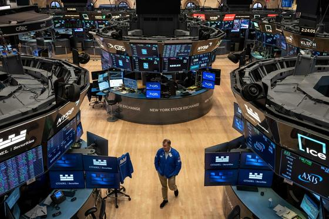
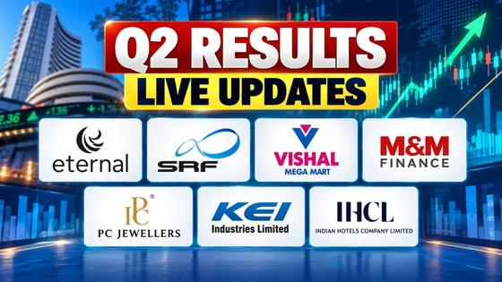
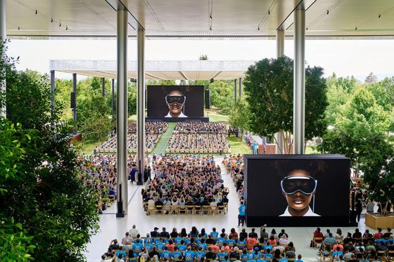
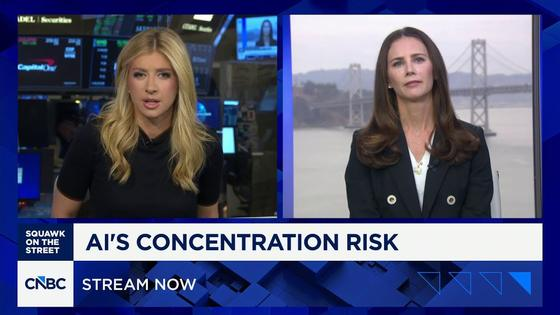

Executive Synthesis: Prompt optimizers under scrutiny, Perseverance's Mars driving record and the Jio Platforms IPO lead the day, while Iran says Hormuz mines stalled tankers and Anirudh's Jailer 2 theme arrives for the movies and music slate.
Markets and Money
Wall Street drifted as SpaceX climbed and Netflix and AT&T fell; Netflix beat third-quarter earnings but gave a weaker fourth-quarter forecast. In India the Sensex and Nifty ended lower on 21 October after an early rally reversed, and the Jio Platforms IPO was subscribed about three times on its first day. Ahead: the ECB meets 28 and 29 October, the Bank of Japan 29 and 30 October, and Apple reports on 2 November.
US markets
| Associated Press via The Mercury News: | today · 4m |

Wall Street drifts as SpaceX climbs and Netflix and AT&T fall — As of 10:15 a.m. Eastern on Wednesday 2026-10-21, the S&P 500 was virtually unchanged, the Dow down 30 points (0.1%) and the Nasdaq composite 0.4% higher. SpaceX rose 11.1% on a stronger-than-expected profit, Super Micro Computer gained 11.4%, Netflix fell 4.2% and AT&T 5.6% on forecasts. The 10-year Treasury yield eased to 5.09% from 5.12%.
Takeaway: Market context for the AI-infrastructure names (Nvidia, Super Micro, CoreWeave) that track the AI build-out you follow.
| Reuters via KFGO: | yesterday · 3m |
Netflix beats third-quarter earnings but gives a weaker fourth-quarter forecast
—
Netflix reported Q3 revenue of $12.87 billion, up 11.8% (the slowest growth in nearly three years), and EPS of 87 cents versus 82 cents expected. It guided Q4 EPS to 67 cents against 73 cents expected and cut its 2026 advertising forecast to about $2.7 billion from about $3 billion. Shares fell more than 5% after hours on Oct 20.
Takeaway: Broad market interest: a large streaming platform's guidance reset, relevant to your movies and streaming watch list.
| The Straits Times (Reuters): | today · 3m |
Asian stocks climb as strong earnings buoy Wall Street; Fed seen holding on Oct 28
—
After the Oct 20 US session (S&P 500 +0.3%), MSCI Asia-Pacific ex-Japan rose 1.5% and the Nikkei 225 1.3%. With 13% of S&P 500 companies reporting, 86% beat earnings estimates per LSEG. A Reuters poll expects the Fed to skip a hike on Oct 28; CME FedWatch implied an 83% chance of a hold. The US 10-year yield was 5.123%.
Takeaway: Broad market interest: the rate path and earnings season set the backdrop for AI and tech stocks you follow.
| Wells Fargo Investment Institute: | today · 2m |
Treasury yields edge higher before the open as housing data soften
—
As of 6:54 a.m. ET on Oct 21, the 10-year yield was up one basis point at 5.12%, the 30-year at 5.43% and the 2-year at 4.79%. On Oct 20, September pending home sales fell a greater-than-expected 7.3% month over month; the Treasury auctions $13 billion of 20-year bonds today. Mortgage applications fell 5.3% for the week ended Oct 16.
Takeaway: Broad market interest: rates context behind the AI-spending and borrowing-cost debate in tech stocks.
India markets
| CNBC TV18: | today · 3m |
Sensex and Nifty end lower on 21 October after an early rally reverses; mid and small caps fall about 2%
—
In the 21 October 2026 session, the first after the Dussehra closure, the Sensex fell 143 points to 73,710 and the Nifty 50 fell 78 points to 22,811, after climbing nearly 1% early. The Nifty Midcap index fell nearly 2% and the Smallcap index around 2.4%. The report cites Brent above $110 a barrel and rising bond yields, plus weak results at SRF and ABB India.
Takeaway: Covers the small-cap trend you follow in India markets, with the day's broader sell-off and sector moves.
| Moneycontrol: | today · 4m |
Jio Platforms IPO is subscribed about 3 times on day one, led by institutional buyers
—
The roughly ₹30,200 crore Jio Platforms IPO, described by Moneycontrol as the largest in India, opened on 21 October with a price band of ₹1,065-₹1,119 and closes on 23 October. Moneycontrol's live blog reports 3.02 times overall subscription on day one, with the institutional (QIB) portion above 9 times and retail at 69%.
Takeaway: A notable IPO in the India markets coverage you follow, and a live read on how Indian primary-market demand looks this week.
| CNBC TV18: | today · 5m |

Q2 FY27 results season resumes after Dussehra: KEI Industries revenue up 39%, PC Jeweller profit up 58% — CNBC TV18's live blog tracks 21 October results and reactions. KEI Industries (power cables) reported revenue up 39%, and PC Jeweller's net profit rose 58% to ₹331 crore. Bajaj Finance raised its FY27 AUM guidance but flagged margins. Eternal, SRF, Indian Hotels, IREDA and Hindustan Zinc were among others reporting or reacting that day.
Takeaway: Follows the Q2 results season and includes a power-and-cables name from the sectors you track.
| Mint: | 4 days ago · 3m |
Takeaway: BEL is a bellwether for defence electronics, a sector on your India markets list.
The week ahead
| Bank of Japan: | 5 days ago · 2m |
Bank of Japan policy meeting runs Oct 29-30, statement on Oct 30
—
The Bank of Japan's published schedule lists its next Monetary Policy Meeting for Thursday Oct 29 and Friday Oct 30 (Tokyo time). The Outlook Report's 'Bank's View' is due on Oct 30 right after the meeting, with the full text at 2:00 p.m. the next business day. The Summary of Opinions follows on Nov 10. Exact decision time is not stated; dates are in Japan Standard Time.
Takeaway: Broad market-calendar interest: a major central-bank decision in the same week as the Fed and ECB, which can move global rates and currencies.
| European Central Bank: | yesterday · 2m |
ECB Governing Council meets Oct 28-29; press conference on Oct 29
—
The ECB calendar shows the Governing Council's monetary policy meeting in Frankfurt on Oct 28 (day 1) and Oct 29 (day 2), with a press conference after the second day. The meeting coincides with the Fed's decision on Oct 28 and the Bank of Japan's on Oct 30, so three major central banks report within three days. Times are Frankfurt local (CET).
Takeaway: Broad market-calendar interest: it lets you see the full central-bank week alongside the Fed decision already flagged.
| The Apple Post: | Oct 7 · 2m |

Apple to report fiscal Q4 2026 results on Nov 2, after the market close — Apple will release fiscal Q4 results on Monday Nov 2 at 1:30 p.m. PT, with a conference call at 2 p.m. PT. The quarter ran June 28 to September 26. Apple had guided to 9% to 11% year-over-year revenue growth against $102.5 billion a year earlier. It is the first call led by CEO John Ternus with CFO Kevan Parekh. Per the article, citing Apple's investor relations schedule.
Takeaway: Broad interest in big-tech earnings; a date to note for the week after the Fed, ECB and BoJ meetings.
| The Economic Times: | today · 3m |
EAAA India Alternatives IPO opens Oct 26 at Rs 1,585-1,665 per share
—
EAAA India Alternatives, the Edelweiss alternative-assets manager, set a price band of Rs 1,585-1,665 for its Rs 1,200 crore offer. Subscription runs Oct 26 to Oct 28 (IST), allotment is expected Oct 29, and listing on NSE and BSE is tentatively Nov 2. It reports AUM of Rs 95,344.88 crore as of June 30, 2026. This is a fact of the IPO calendar, not a view on the issue.
Takeaway: Broad India-markets interest: the next notable mainboard IPO after Jio Platforms, with a clear listing date inside the window.
Watch
| CNBC: | today · 5m |
Why Bonds Are Back On Investors' Radar
—
CNBC explains why the 10-year Treasury yield recently rose above 5%, its highest in more than two decades, citing rate expectations, federal borrowing and demand for financing AI buildouts, then discusses how higher bond returns affect the stock-versus-bond comparison. General explainer, not advice.
Takeaway: Broad market context on yields and AI financing, topics running through the week's coverage.
| CNBC Television: | today · 5m |

How AI's 'top-heavy' spending problem may be an underrated market risk — CNBC's Kate Rooney reports that the AI boom's spending is driven by a small group of Silicon Valley companies and examines why that concentration is described as an underrated risk to the AI trade. Reported as of 2026-10-21; a general market-structure view.
Takeaway: Relevant broad-interest context on who funds AI infrastructure, which shapes the enterprise AI market you follow.